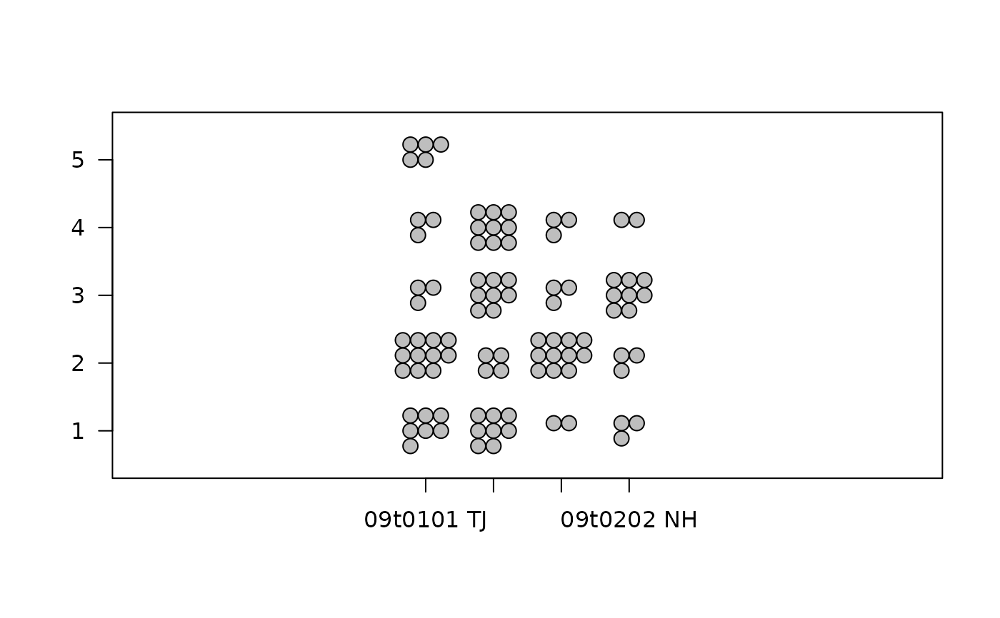
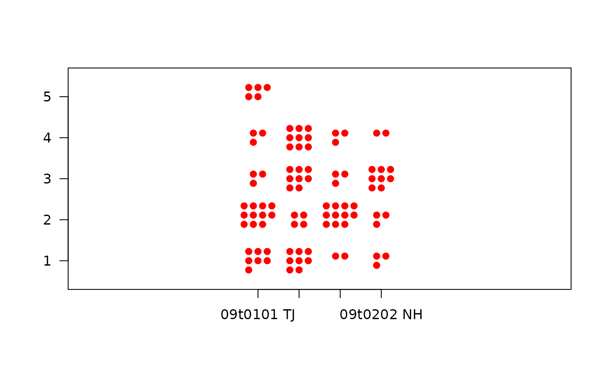
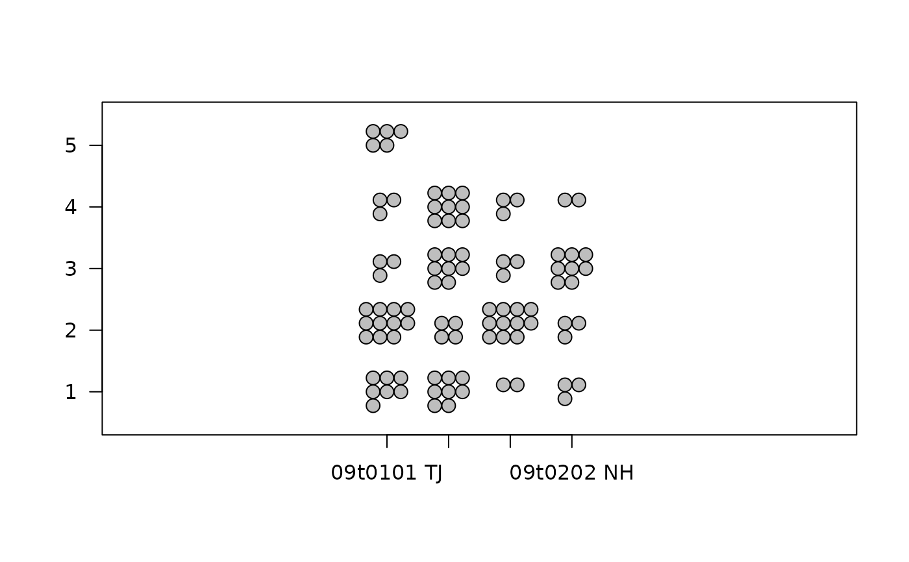
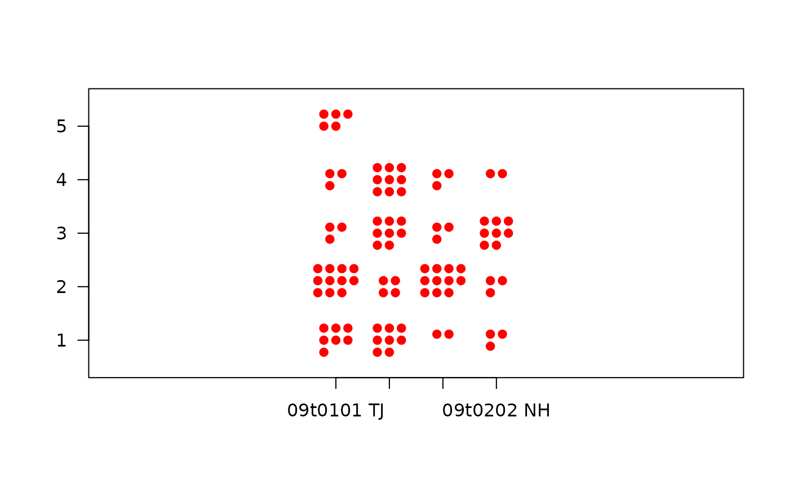

Display the frequencies of two categories
clustered.dotplots.Rdclustered.dotplots displays a contingency table as clusters of symbols on a plot. It expects xgroup and ygroup to contain all or some of the combinations of their unique values. It also expects freq to contain the number of instances of each combination.
Usage
clustered.dotplots(xgroup, ygroup, freq, type = "circles",
main="",xlab="",ylab="",x_las=1,y_las=1,axes=TRUE,size=1,...)Arguments
- xgroup,ygroup
Vectors that specify the two groupings to be displayed (see Details).
- freq
The frequencies in the two groupings.
- type
The type of symbols to use as "dots".
- main,xlab,ylab
As in plot.
- x_las,y_las
Orientation of the axis tick labels.
- axes
Whether to display axes.
- size
Spacing for the clusters.
- ...
additional arguments passed to "points".
Examples
df <- structure(list(set = c("09t0101 TJ", "09t0102 MW", "09t0201 EH",
"09t0202 NH", "09t0101 TJ", "09t0102 MW", "09t0201 EH", "09t0202 NH",
"09t0101 TJ", "09t0102 MW", "09t0201 EH", "09t0202 NH", "09t0101 TJ",
"09t0102 MW", "09t0201 EH", "09t0202 NH", "09t0202 NH"), grade = c("1",
"1", "1", "1", "2", "2", "2", "2", "3", "3", "3", "3", "4", "4",
"4", "4", "5"), freq = c(7, 8, 2, 3, 11, 4, 11, 3, 3, 8, 3, 8,
3, 9, 3, 2, 5)), .Names = c("set", "grade", "freq"), row.names = c(NA,
17L), class = "data.frame")
clustered.dotplots(xgroup = df$set, ygroup = df$grade, freq = df$freq)
 clustered.dotplots(xgroup = df$set, ygroup = df$grade, freq = df$freq,
col = "gray")

clustered.dotplots(xgroup = df$set, ygroup = df$grade, freq = df$freq,
type = "points")
clustered.dotplots(xgroup = df$set, ygroup = df$grade, freq = df$freq,
type = "points", pch = 19, col = "red")

# this will cause an error
# clustered.dotplots(xgroup = mtcars$cyl, ygroup = mtcars$gear,
# freq = mtcars$carb)
# how to fix it
cumcars<-by(mtcars$carb,list(mtcars$cyl,mtcars$gear),valid.n)
mtcars2<-data.frame(cyl=NA,gear=NA,carb=NA)
rownum<-1
for(cyl in dimnames(cumcars)[[1]]) {
for(gear in dimnames(cumcars)[[2]]) {
if(!is.na(cumcars[cyl,gear])) {
mtcars2[rownum,]<-c(as.numeric(cyl),as.numeric(gear),cumcars[cyl,gear])
rownum<-rownum+1
}
}
}
clustered.dotplots(xgroup = mtcars2$cyl, ygroup = mtcars2$gear,
freq = mtcars2$carb,main="Cars by number of cylinders and gears",
xlab="Number of cylinders",ylab="Number of gears",type="points",pch=5)
clustered.dotplots(xgroup = df$set, ygroup = df$grade, freq = df$freq,
col = "gray")

clustered.dotplots(xgroup = df$set, ygroup = df$grade, freq = df$freq,
type = "points")
clustered.dotplots(xgroup = df$set, ygroup = df$grade, freq = df$freq,
type = "points", pch = 19, col = "red")

# this will cause an error
# clustered.dotplots(xgroup = mtcars$cyl, ygroup = mtcars$gear,
# freq = mtcars$carb)
# how to fix it
cumcars<-by(mtcars$carb,list(mtcars$cyl,mtcars$gear),valid.n)
mtcars2<-data.frame(cyl=NA,gear=NA,carb=NA)
rownum<-1
for(cyl in dimnames(cumcars)[[1]]) {
for(gear in dimnames(cumcars)[[2]]) {
if(!is.na(cumcars[cyl,gear])) {
mtcars2[rownum,]<-c(as.numeric(cyl),as.numeric(gear),cumcars[cyl,gear])
rownum<-rownum+1
}
}
}
clustered.dotplots(xgroup = mtcars2$cyl, ygroup = mtcars2$gear,
freq = mtcars2$carb,main="Cars by number of cylinders and gears",
xlab="Number of cylinders",ylab="Number of gears",type="points",pch=5)